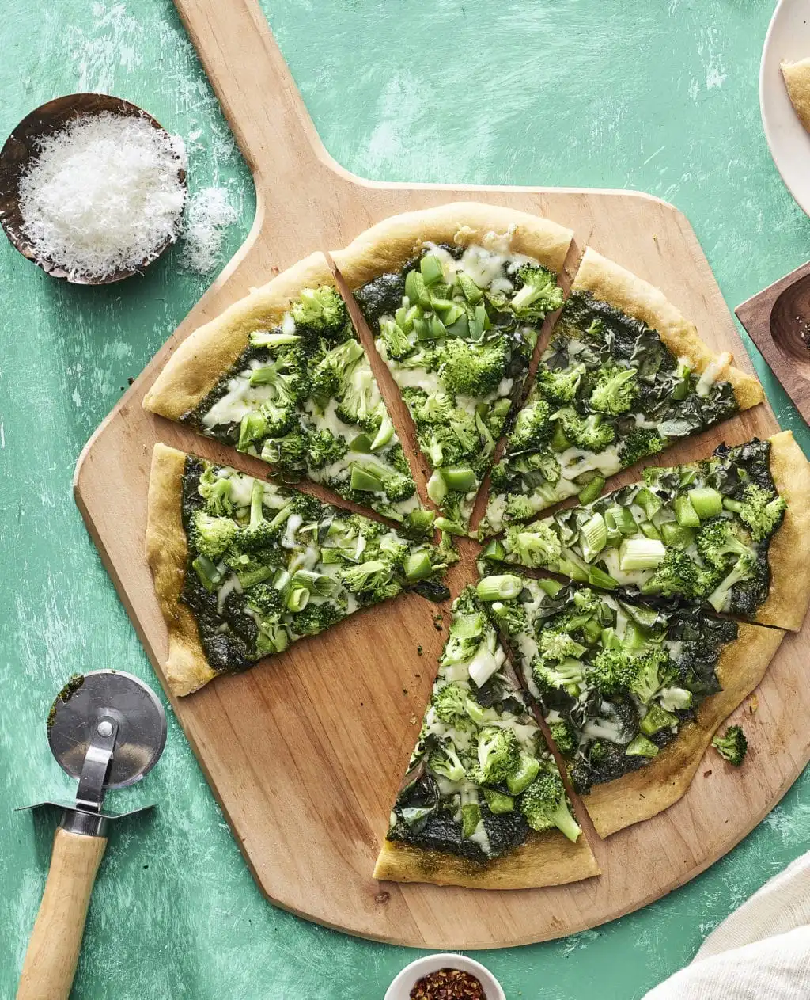

Pesto Pizza

Description:
Pesto pizza is a flavorful twist on traditional
pizza that uses aromatic basil pesto instead of
tomato sauce. The dough is topped with pesto,
mozzarella cheese, and fresh ingredients like
tomatoes or chicken, then baked until the crust
is golden and crispy. The result is a bright,
herby pizza with rich, savory flavors.
Ingredients:
- 1 (12 inch) pre-baked pizza crust
- ½ cup pesto
- 1 ripe tomato, chopped
- ½ cup green bell pepper, chopped
- 1 (2 ounce) can chopped black olives, drained
- ½ small red onion, chopped
- 1 (4 ounce) can artichoke hearts, drained and sliced
- 1 cup crumbled feta cheese
Steps:
- Preheat the oven to 450 degrees F (230 degrees C).
- Spread pesto on pizza crust.
Top with tomato, bell pepper,
olives, red onion, artichoke
hearts, and feta cheese.
- Bake in the preheated oven until cheese is melted and browned, 8 to 10 minutes.